La quinta generación de Pokémon inicia en la Nintendo DS con los títulos Pokémon Blanco y Pokémon Negro, lanzados el 18 de septiembre de 2010 en Japón, y en marzo de 2011 en el resto del mundo.
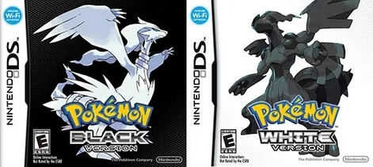
Portadas de Pokémon Negro y Pokémon Blanco
Esta generación no contiene remakes de otras, ni una tercera versión como es tradición en la franquicia. En su lugar, es la primera generación en tener dos entregas principales totalmente nuevas, ya que el 23 de junio de 2012 se lanzó en Japón Pokémon Blanco 2 y Pokémon Negro 2, secuelas directas de los anteriores, también en la Nintendo DS, y llegaron en octubre de 2012 al resto del mundo.
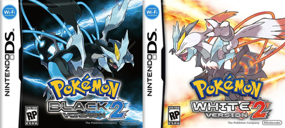
Portadas de Pokémon Negro 2 y Pokémon Blanco 2
Ambas parejas de títulos triunfaron en la plataforma, con Pokémon Negro y Pokémon Blanco vendiendo 15 millones y medio de copias, siendo top 6 de la consola, y sus secuelas acumulando 8 millones y medio de ventas.
En el anime de la franquicia, la quinta generación incluye la decimocuarta, decimoquinta y decimosexta temporada, alcanzando la cantidad de 804 capítulos. También entran la decimocuarta, decimoquinta y decimosexta película.
Novedades
La quinta generación trae las siguientes novedades:
Se añaden 156 Pokémon, la mayor cantidad de criaturas añadidas en una generación, llegando a 649 en total. Estos incluyen nueve Pokémon legendarios y cuatro singulares, y en lugar de añadir preevoluciones o evoluciones a las líneas existentes, se centra en incluir gran cantidad de especies totalmente nuevas.
Starters de Teselia
Snivy
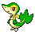
Tepig
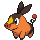
Oshawott
Los Pokémon legendarios de estas ediciones son Reshiram (Pokémon Negro) y Zekrom (Pokémon Blanco), estando también Kyurem en las portadas de las secuelas.
La región en la que se ambientan los juegos principales es Teselia, llamada Unova en inglés y Isshun en japonés. Siendo la primera región inspirada por un lugar externo a Japón, se base en Nueva York y parte de Nueva Jersey, siendo una región con enormes ciudades y muy industrializada, dividida en tres zonas
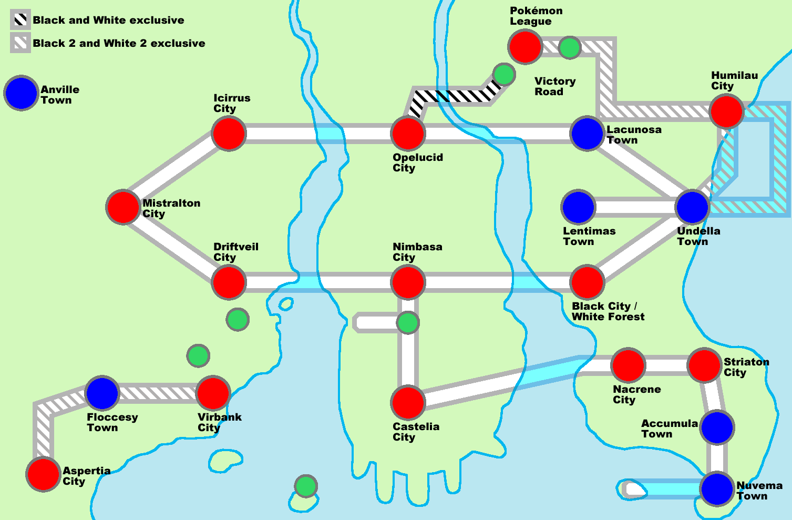
Mapa de Teselia
El equipo de villanos en este caso es el Equipo Plasma, que cree que los Pokémon están oprimidos por los humanos y deben ser liberados.
Adición de 92 nuevos movimientos y 41 nuevas habilidades.
Se introduce por primera vez en la saga un sistema de combate triple.
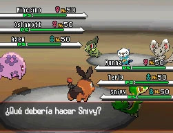
Combate Triple
Hay varios cambios mecánicos y estéticos en los combates: podremos ver todo el cuerpo de nuestro Pokémon, no solo su espalda, los fondos se han mejorado y la apariencia de los Pokémon puede cambiar según su estado, por ejemplo cerrando los ojos al dormirse.
Si un Pokémon es envenenado durante un combate, no perderá sus PS fuera de este mientras caminamos como ocurría anteriormente.
En esta generación, la ganancia de experiencia en combate depende de la diferencia de nivel entre nuestro Pokémon y el rival. Además, a la hora de repartirse entre el equipo, los Pokémon de menor nivel se llevan una parte mayor.
Se elimina la necesidad de tener una medalla específica para utilizar una MO fuera de combate. Además, las MT también se pueden usar indefinidamente.
Se añade la Zona Nexo, un bosque en el medio de la región que nos permitir ayudar a otros jugadores en una especie de cooperativo.
Presencia del C-Gear, una mezcla del Pokégear y el Poké-reloj, que tiene nuevas funciones como la Función De Paso, que permite conectarnos a jugadores cercanos.
Siguiendo con las mejoras en la conectividad, el GTS incorporado en la anterior generación ahora incluye una opción para luchar con otro entrenador conectado al azar.
Las entregas de Pokémon Negro 2 y Pokémon Blanco 2 presentan algunas mejoras como:
Se añade el Pokémon World Tournament, un torneo donde nos podemos enfrentar a los campeones de otras regiones.
La pokédex de la región se amplia y recibe leves mejoras de diseño.
Algunos personajes son sustituidos por otros.
Ocurren cambios generales en el mapa, con la aparición de algún pueblo nuevo.
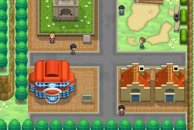
Pueblo Ocre
Historia
De nuevo, el objetivo principal de la historia es convertirse en campeones Pokémon de la región. Comenzamos en Pueblo Arcilla, donde la Profesora Encima nos regala nuestro Pokémon inicial junto a nuestros amigos Cheren y Bel.
Pronto nos encontraremos con el equipo villano de la entrega, el Equipo Plasma, que cree que los Pokémon deben ser liberados y están oprimidos por los humanos. Dirigidos por N, un chico que considera a los Pokémon sus amigos tras criarse con ellos. Este planea capturar el Pokémon legendario de la región y derrotar al campeón para ser reconocido y poder convencer a los demás de liberar a sus Pokémon.
Tras superar el Alto Mando descubrimos que N ha logrado convertirse en campeón, y el Pokémon legendario ha sido invocado. Tras superar el enfrentamiento contra N y derrotarlo, se plantea si sus ideales son correctos, y aparece su padre Ghetsis, que revela que ha usado a N para obtener control y dominar el mundo con los Pokémon, pero conseguimos derrotarlo y es arrestado, por lo que Mirto vuelve a ser el campeón de la región. N se da cuenta de que sus ideales estaban equivocados y comprende nuestra visión de los Pokémon.
Después de esto, Handsome, un detective de la policía internacional, nos pide buscar a los miembros restantes del Equipo Plasma. También podemos desafiar de nuevo al Alto Mando y a Mirto para convertirnos en campeones de la región.
En cuanto a la historia de Pokémon Negro 2 y Pokémon Blanco 2, ocurre dos años después de los eventos del primero, comenzando en Ciudad Englobe. En esta trama, muchos de los personajes que conocemos han asumido nuevos papeles, el Equipo Plasma sigue causando problemas en la región y el objetivo principal es desentrañar el misterio de un poderoso Pokémon legendario que ha aparecido, Kyurem.
Otros juegos
La quinta generación cuenta con algunos títulos secundarios que continúan subsagas anteriores:
Pokémon Mundo misterioso: Portales al infinito
Pokémon Mundo misterioso: Portales al infinito es la tercera entrega de la subsaga Mundo misterioso, lanzada para Nintendo 3DS el 23 de noviembre de 2012 en Japón, el 24 de marzo de 2013 en América y en mayo del mismo año en Australia y Europa. Esta vez no hay dos o tres versiones como en casos anteriores, siendo esta la única entrega.
De forma similar a los anteriores, el protagonista se convierte en Pokémon y cae al Mundo Pokémon. Allí, conoce a su acompañante, y juntos compran un terreno a Quagsire con la idea de hacer un Paraíso Pokémon. En este terreno, además de la casa del equipo, habrá diversas tiendas. Durante este proceso conocen a muchos nuevos amigos, hasta que encuentran a Hydreigon, que había aparecido previamente en los sueños del protagonista, siendo aparentemente malvado.
Se desvela que no es un villano, sino una encarnación de la vo que trajo a este mundo al protagonista para salvarlo. Allí, Kyurem los enfrenta y los vence, evitando que destruyan lo que está causando estragos en el mundo. Tiempo después, tras reunir un grupo consiguen regresar y derrotarlo, salvando el mundo. Tras ello, nuestro personaje ha cumplido su cometido y se desvanece.
Después de los hechos de la historia principal, Hydreigon descubre una forma de que el protagonista vuelva al mundo, y junto a nuestro anterior compañero logran hacer lo necesario para ello. Considerando que sería egoísta alejarle de sus seres queridos, el compañero desea en su lugar que pueda cruzar las dimensiones libremente.
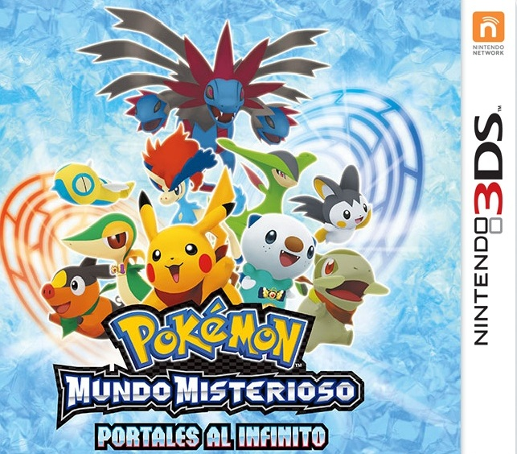
PokéPark 2: Un mundo de ilusiones
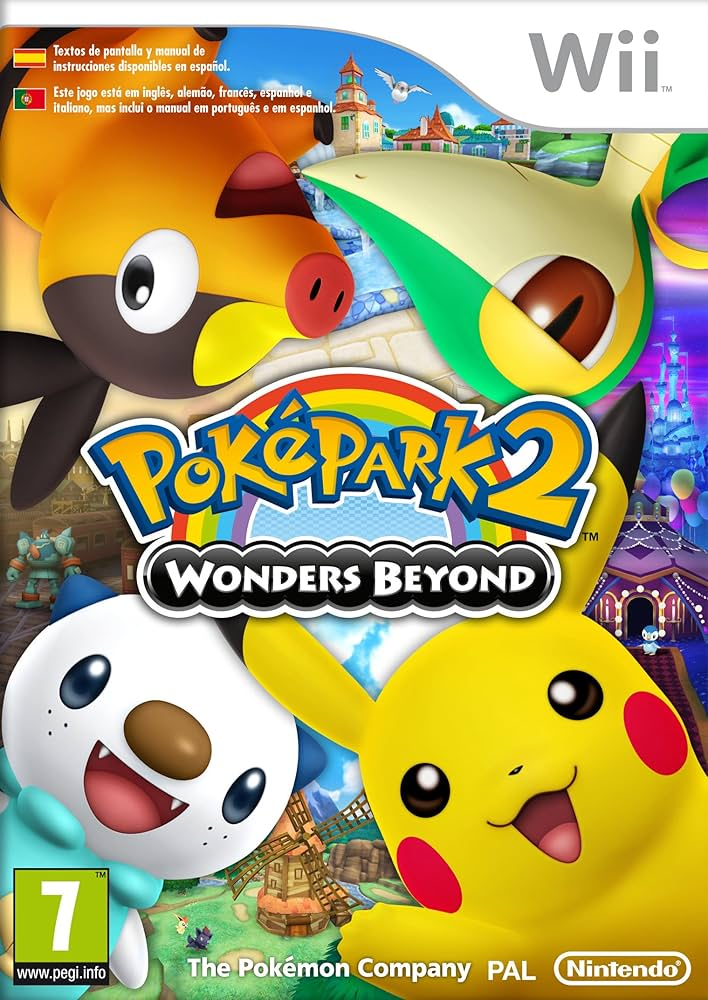
PokéPark 2: Un mundo de ilusiones es la la secuela de PokéPark Wii: La gran aventura de Pikachu, lanzado para Wii el 12 de noviembre de 2011 en Japón, el 27 de febrero de 2012 en América, y en marzo en Australia y Europa.
En esta entrega podremos alternar entre cuatro Pokémon durante la aventura: Pikachu, Snivy, Tepig y Oshawott, cada uno con habilidades únicas. Por ejemplo, Oshawott es el único que puede nadar, y Tepig puede destruir grandes rocas.
La historia comienza con Pikachu y Piplup siendo invitados al Parque de Ilusiones, pero cuando llegan ven que los Pokémon se comportan de forma extraña. Pronto descubren que una atracción los tiene hipnotizados y son rescatados por Oshawott. Estos hacen sonar la Campana de las ilusiones para restaurar la normalidad, pero el causante del problema los ataca y se lleva a Piplup.
Pikachu y Oshawott, junto a Snivy y Tepig, a los que conocen después, se ponen en marcha para rescatar a Piplup. El culpable de todo esto es Darkrai, quien no deja que las Campanas de las ilusiones suenen, haciendo que se creen un vórtice que podría tragarse todo el parque.
Pokémon Conquest
Pokémon Conquest es un título único en la saga, relacionado con la franquicia de Nobunaga's Ambition, siendo un videojuego de estrategia. Fue lanzado para Nintendo DS el 17 de marzo de 2012 en Japón, y más tarde el mismo año en el resto del mundo.
Ambientada en Ransei, una región inspirada en el Japón feudal, un señor feudal llamado Nobunaga quiere conquistar todos los reinos para hacer aparecer a Arceus, el legendario Pokémon que creó la región. Nuestro objetivo es detenerlo, logrando encontrar a Arceus primero.
Siendo un juego de estrategia, debemos tanto atacar territorios como defender los nuestros, en batallas de hasta 6 Pokémon en las que podremos posicionarlos para atacar de la forma más eficaz posible, haciendo un papel de ejército.
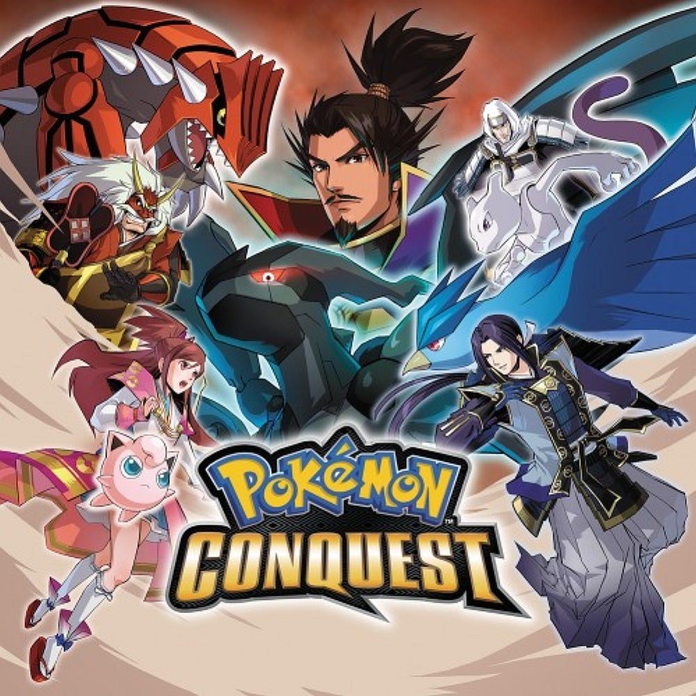
Otro títulos secundario que destaca es Super Pokémon Rumble, secuela de Pokémon Rumble. Además, en esta generación hay algunas aplicaciones y complementos como Pokédex 3D, RAdar Pokémon, Pokémon Say Tap? o Aprende con Pokémon: Aventura entre las teclas.

 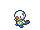
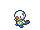